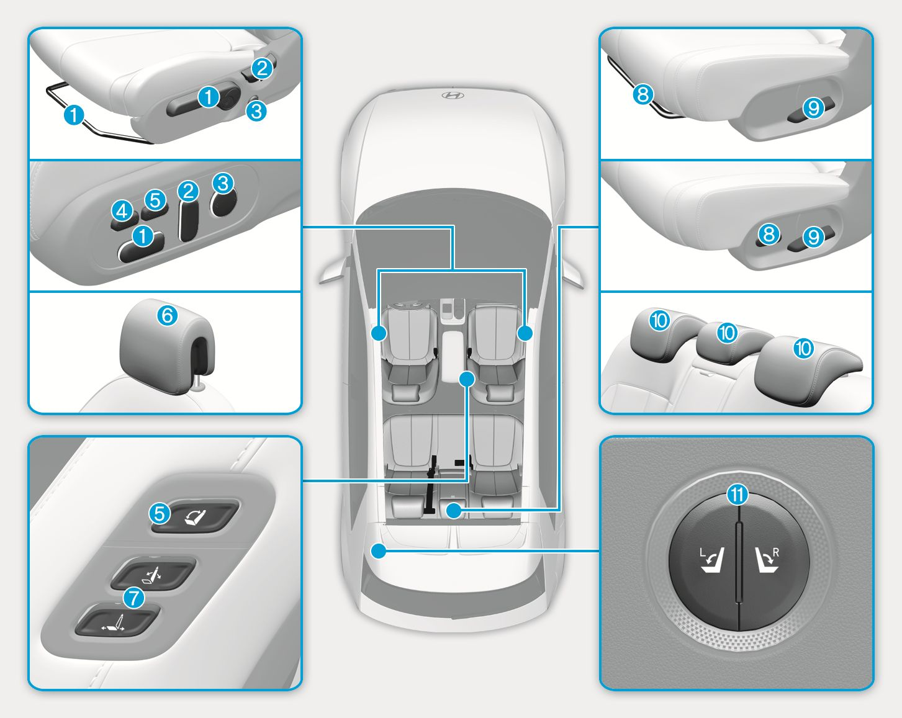

시트 조작부 명칭
시트의 조작부 위치와 명칭을 확인하고, 주행 전 시트의 위치, 각도, 높이 등을 조절하십시오.
-
시트 위치를 조절할 때 '바람직한 운전 자세'를 참고하십시오.
-
부품명 옆에 표시된 참고 페이지에서 상세 사용 정보를 확인할 수 있습니다.

1C_FrontSeatOverview
- 앞좌석 전후 위치 조절/쿠션 높이 조절/쿠션 각도 조절/릴렉션 컴포트 각도 조절(사양 적용 시)
- 앞좌석 등받이 각도 조절
- 앞좌석 허리 지지대(럼버 서포트) 조절
- 앞좌석 다리 받침대 조절
- 앞좌석 릴렉션 컴포트 시트 스위치
- 앞좌석 헤드레스트
- 동승석 측면 워크인 스위치
- 뒷좌석 전후 위치 조절
- 뒷좌석 등받이 각도 조절/좌석 접이
- 뒷좌석 헤드레스트
- 뒷좌석 리모트 폴딩 버튼
-
이 문서에 포함된 차량 및 부품 이미지는 예시를 위해 제공되는 것으로, 실제 차량 또는 부품과 다를 수 있습니다.
-
사용자 차량의 사양에 따라 설명에 포함된 일부 기능이 제공되지 않을 수 있습니다.
인포테인먼트 시스템에서 설정 > 차량 > 시트를 선택한 후 좌석 관련 편의 기능을 설정할 수 있습니다. 자세한 설명은 '승하차 편의 기능'을 참고하십시오.